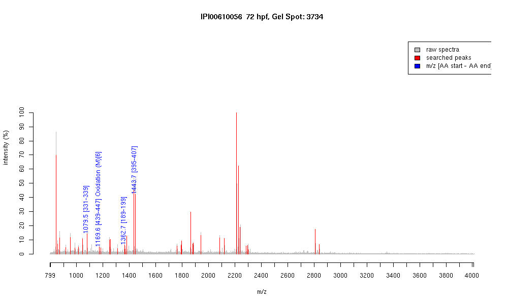

| Name | PREDICTED: type II cytokeratin isoform15 |
|---|---|
| MW | 57809.4 |
| PI | 5.34 |
| Mascot Protein Score | 94 |
| Masses (matched / unmatched) | 4 / 45 |

| Peptide | MZ (calc) | MZ (observed) | Error (DA) | Error (PPM) | Start | Stop | Modifications |
|---|---|---|---|---|---|---|---|
| AQYEDIANR | 1079.5116 | 1079.5198 | 0.0082 | 8 | 331 | 339 | |
| EYQELMNVK | 1169.5507 | 1169.5564 | 0.0057 | 5 | 439 | 447 | Oxidation (M)[6] |
| WSLLQEQTTTR | 1362.7013 | 1362.6996 | -0.0017 | -1 | 189 | 199 | |
| ANLEAQIAEAEER | 1443.7074 | 1443.708 | 0.0006 | 0 | 395 | 407 |